DaliBench: The Persistence of Memory
Can language models paint famous artworks from memory, using only text?
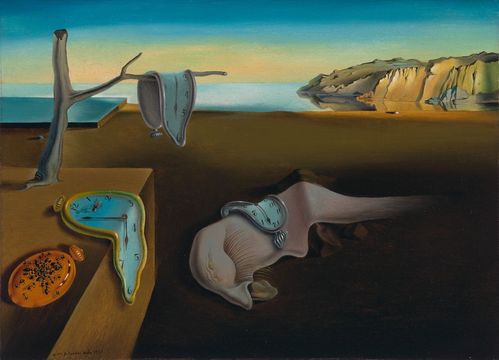
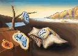
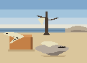
Scale often leads to unexpected emergent abilities in language models, so called "big model smell". This is difficult to measure, and good metrics (like the pelican on a bicycle svg) inevitably become a target. Here's my attempt at a new metric.
How it works
-
1 The task
We give the model only the title, artist, and date of the painting, as text.
Painting: The Persistence of Memory, by Salvador Dalí, 1931.
-
2 The tool
It selects its own colour palette, one character per colour defined by RGB values, and then types the picture row by row, one character per pixel, by calling a tool. The tool only checks that each row has the right length.
What the model sends
palette a 107 155 165 b 121 166 177 c 135 178 184 d 240 218 151 e 246 228 170 h 233 218 174 … and 8 more start_row 1 rows aaab bbbb bccc ccbb ddde eeee eeeh hfgv iiij jjjj jjku gvwv
What comes back
palette: 14 colours defined. rows 1-3: stored 3, rejected 0. stored so far: 3 of 12. missing: 4-12.
The 12 rows, each character in its colour
aaabbbbbbcccccbbdddeeeeeeeehhfgviiijjjjjjjkugvwvmnqkrAnlsskujkiuPPRrBCmMNNOOOONNQDrFFHFFDTMMNNNMWnoDFUFmIGDTVMMVWWQKPQUIYLGTTVVTW12xyfU5ESY67DTT34QfH9UJ5I6J7EFDWWQ9z8UU+RU*UFFtQ99998pUpFFFFttt16 × 12 cells, 61 colors.
-
3 The sizes
We repeat this at 16, 32, 64, and 128 cells wide, starting from scratch each time.
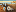
16 × 12 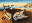
32 × 23 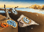
64 × 46 128 × 93 -
4 The judging
A judge sees the original and every finished picture of it, unlabelled and shuffled, and ranks them: two judges, three times each.
One real ranking by a judge: The Persistence of Memory, 32 wide
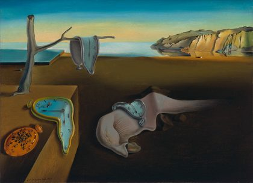
REFERENCE 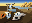
Picture T 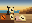
Picture B Picture J 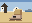
Picture H 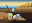
Picture U 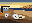
Picture P 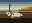
Picture W Picture C Picture N Its answer, best first
OVERALL: C, T, U, W, P, B, J, H, N
Rank them yourself
Put these in order, closest to the original first, then see who made them.
Drag a picture by its bar, or use the arrow keys. Shift for next.
✓ You ranked this set.
Results
We choose 128 as the headline number, as it's where the capability difference between models is most visible.
Judged by Fable 5.2 and Opus 5.5, which also compete.
| Place | Model | Rank score | Interval | Thinking | Cost | Time |
|---|---|---|---|---|---|---|
| 1 | Gemini 4 CarbonGoogle · high effort | 0.870.82–0.91 | 34k | $0.60 | 9 min | |
| 2 | GPT-6.2 AstraOpenAI · max effort | 0.780.69–0.86 | 18k | $1.23 | 9 min | |
| 3 | Fable 5.2Anthropic · max effort | 0.660.59–0.72 | 54k | $3.63 | 10 min | |
| 4 | Opus 5.5Anthropic · max effort | 0.620.54–0.69 | 43k | $1.37 | 8 min | |
| 5 | Fable 5Anthropic · max effort | 0.440.36–0.52 | 15k | $1.12 | 4 min | |
| 6 | Sonnet 5.5Anthropic · max effort | 0.440.34–0.54 | 65k | $1.05 | 9 min | |
| 7 | Sonnet 5Anthropic · max effort | 0.110.07–0.15 | 27k | $0.36 | 5 min | |
| 8 | Haiku 5.5Anthropic · max effort | 0.090.05–0.14 | 26k | $0.02 | 2 min |
| Place | Model | Rank score | Interval | Thinking | Cost | Time |
|---|---|---|---|---|---|---|
| 1 | GPT-6.2 AstraOpenAI · max effort | 0.900.83–0.96 | 29k | $1.98 | 14 min | |
| 2 | Gemini 4 CarbonGoogle · high effort | 0.790.74–0.85 | 36k | $0.61 | 9 min | |
| 3 | Fable 5.2Anthropic · max effort | 0.780.73–0.83 | 67k | $4.57 | 12 min | |
| 4 | Opus 5.5Anthropic · max effort | 0.560.51–0.61 | 62k | $2.06 | 10 min | |
| 5 | Fable 5Anthropic · max effort | 0.410.34–0.48 | 29k | $2.02 | 7 min | |
| 6 | Sonnet 5.5Anthropic · max effort | 0.410.36–0.46 | 93k | $1.51 | 11 min | |
| 7 | Haiku 5.5Anthropic · max effort | 0.080.05–0.12 | 47k | $0.04 | 3 min | |
| 8 | Sonnet 5Anthropic · max effort | 0.070.04–0.10 | 71k | $0.98 | 12 min |
| Place | Model | Rank score | Interval | Thinking | Cost | Time |
|---|---|---|---|---|---|---|
| 1 | GPT-6.2 AstraOpenAI · max effort | 0.910.83–0.97 | 32k | $2.60 | 17 min | |
| 2 | Fable 5.2Anthropic · max effort | 0.730.67–0.79 | 105k | $8.35 | 17 min | |
| 3 | Gemini 4 CarbonGoogle · high effort | 0.730.62–0.82 | 37k | $0.79 | 11 min | |
| 4 | Opus 5.5Anthropic · max effort | 0.660.60–0.72 | 104k | $4.22 | 16 min | |
| 5 | Fable 5Anthropic · max effort | 0.440.39–0.51 | 59k | $5.23 | 13 min | |
| 6 | Sonnet 5.5Anthropic · max effort | 0.380.33–0.44 | 148k | $2.55 | 18 min | |
| 7 | Sonnet 5Anthropic · max effort | 0.080.04–0.11 | 130k | $1.98 | 22 min | |
| 8 | Haiku 5.5Anthropic · max effort | 0.070.04–0.10 | 91k | $0.09 | 6 min |
| Place | Model | Rank score | Interval | Thinking | Cost | Time |
|---|---|---|---|---|---|---|
| 1 | Fable 5.2Anthropic · max effort | 0.870.82–0.92 | 167k | $19.13 | 26 min | |
| 2 | GPT-6.2 AstraOpenAI · max effort | 0.850.76–0.93 | 26k | $3.76 | 19 min | |
| 3 | Gemini 4 CarbonGoogle · high effort | 0.640.51–0.75 | 36k | $1.33 | 14 min | |
| 4 | Opus 5.5†Anthropic · max effort | 0.560.50–0.62 | 141k | $7.19 | 25 min | |
| 5 | Fable 5†Anthropic · max effort | 0.500.42–0.57 | 104k | $13.06 | 23 min | |
| 6 | Sonnet 5.5†Anthropic · max effort | 0.370.33–0.43 | 225k | $5.48 | 30 min | |
| 7 | Haiku 5.5Anthropic · max effort | 0.090.05–0.13 | 196k | $0.31 | 13 min | |
| 8 | Sonnet 5†Anthropic · max effort | 0.090.05–0.12 | 198k | $4.65 | 34 min |
† Scored on fewer paintings; a missing picture is not a loss.
Rank score: how often a model's pictures beat the others at this size (0 never, 1 always).
Thinking, cost (list price), and time are per picture.
The pictures
500 pictures. 12 attempts left no picture: 11 blocked by the provider, 1 unfinished.
Spoiler: these pictures are labelled by model. Rank a set first if you want to judge blind.
The pictures could not be loaded. Try reloading the page.
256 cells wide
We also tried the two best models at 256 wide, four times the cells of 128. These were not judged, but they often look worse than at 128, perhaps because there is so much more to keep consistent from row to row. GPT-6.2 Astra seems to lose coherence particularly badly, having many more rows rejected that have to be resubmitted, resulting in a smeared effect.
The Persistence of Memory
Original
Fable 5.2
GPT-6.2 Astra
The Great Wave
Original
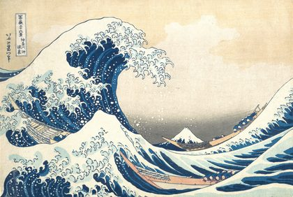
Fable 5.2
GPT-6.2 Astra
The Scream
Original
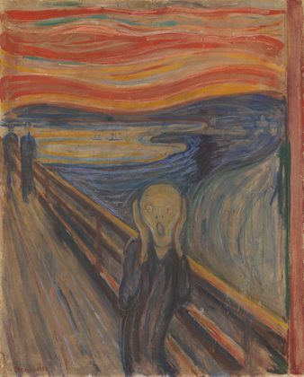
Fable 5.2
GPT-6.2 Astra
Show all 16 paintings
The Birth of Venus
Original
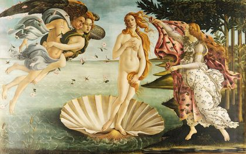

Fable 5.2
GPT-6.2 Astra
Mona Lisa
Original
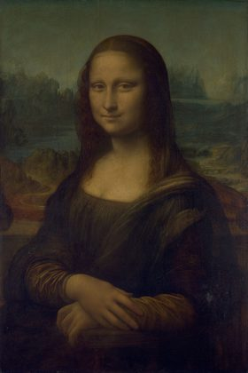

Fable 5.2
GPT-6.2 Astra
The Starry Night
Original
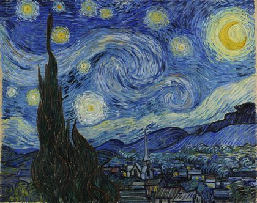

Fable 5.2
GPT-6.2 Astra
Girl with a Pearl Earring
Original
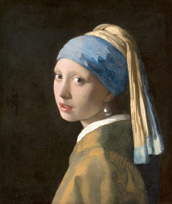

Fable 5.2
GPT-6.2 Astra
The Kiss
Original
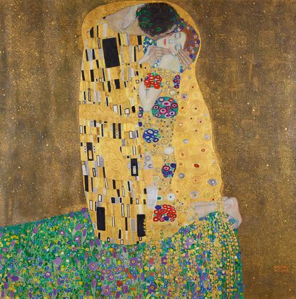
_-_912_-_%C3%96sterreichische_Galerie_Belvedere.jpg){kind=link}
Fable 5.2
GPT-6.2 Astra
La Grande Jatte
Original
Fable 5.2
GPT-6.2 Astra
Wanderer above the Sea of Fog
Original

Fable 5.2
GPT-6.2 Astra
The Night Watch
Original
Fable 5.2
GPT-6.2 Astra
Red Fuji
Original
Fable 5.2
GPT-6.2 Astra
Sudden Shower over Shin-Ōhashi Bridge
Original
Fable 5.2
GPT-6.2 Astra
The Fighting Temeraire
Original

Fable 5.2
GPT-6.2 Astra
Water Lilies (1906)
Original
Fable 5.2
GPT-6.2 Astra
Sunflowers (1888)
Original
.jpg){kind=link}
Fable 5.2
GPT-6.2 Astra
And at default effort
Haiku 5.5 at default effort: about 2 min and $0.06 a picture.
The original artworks
- The Persistence of Memory, Salvador Dalí, 1931. The Museum of Modern Art; © Salvador Dalí, Fundació Gala-Salvador Dalí · Source
- The Great Wave, Katsushika Hokusai, about 1831. The Metropolitan Museum of Art, CC0 · Source
- The Scream, Edvard Munch, 1893. Photo: Nasjonalmuseet / Børre Høstland, CC BY 4.0, cropped · Source
- The Birth of Venus, Sandro Botticelli, about 1485. Gallerie degli Uffizi; image: Google Art Project, public domain · Source
- Mona Lisa, Leonardo da Vinci, about 1503 to 1519. Musée du Louvre; scan: C2RMF, public domain · Source
- The Starry Night, Vincent van Gogh, 1889. The Museum of Modern Art; scan: Google Art Project, public domain · Source
- Girl with a Pearl Earring, Johannes Vermeer, about 1665. Photo: Mauritshuis, public domain · Source
- The Kiss, Gustav Klimt, about 1907 to 1909. Photo: © Belvedere, Wien, CC BY-SA 4.0, cropped · Source
- La Grande Jatte, Georges Seurat, 1884 to 1886. The Art Institute of Chicago, CC0 · Source
- Wanderer above the Sea of Fog, Caspar David Friedrich, about 1817. © SHK / Hamburger Kunsthalle / ARTOTHEK, photo: Elke Walford · Source
- The Night Watch, Rembrandt van Rijn, 1642. Rijksmuseum, Amsterdam, public domain · Source
- Red Fuji, Katsushika Hokusai, about 1831. The Metropolitan Museum of Art, public domain · Source
- Sudden Shower over Shin-Ōhashi Bridge, Utagawa Hiroshige, 1857. The Metropolitan Museum of Art, public domain · Source
- The Fighting Temeraire, J. M. W. Turner, 1839. Photo © The National Gallery, London · Source
- Water Lilies (1906), Claude Monet, 1906. The Art Institute of Chicago, CC0 · Source
- Sunflowers (1888), Vincent van Gogh, 1888. Photo © The National Gallery, London · Source